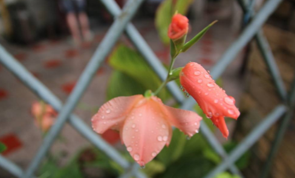

朗读者
【散文欣赏】
桑树枝上挑着的岁月
蔡志杰 2017-03-02 眼前的景象在时间里消失的一刻，记忆便毫不犹豫的将那些珍藏的东西，揽到心里，收进记忆的收纳箱里。
就如唇边上那一抹酱紫色。曾经的儿时，是可以用来炫耀的佐证，是孩提留给人最美好的时光返照。
小时的我们，除了遍山二洼撵着野菜跑外，不是揭那流泥湾的石板，寻找写字的石笔，(链接到百度前端技术学院)就是老石头滩里捡那些好看的河卵石，要不就是上树，掏那鸟窝。而印象最深的地方，是寨子洼了。因为那里的桑树最多， 桑枣最好。也因为这个原因，那些至今长着的桑树上，挑着我们曾经的岁月，那些酱紫色的桑枣汁，可以晕染出我们的自豪和骄傲。
桑枣最好。也因为这个原因，那些至今长着的桑树上，挑着我们曾经的岁月，那些酱紫色的桑枣汁，可以晕染出我们的自豪和骄傲。
因为上学时心里挂着的是桑枣，放学相约一起去的地是去吃桑枣，爬上树左一个，右一个，不停向自己嘴里塞着的，还是桑枣（链接到百度前端技术学院）。吃美了，玩在树杈上，摇在树枝上，唱那红歌，样板戏的，还离不开桑枣树。我想，我应该敢说，挑着童稚岁月的树是桑枣树。
【邓仲祥诗歌】
冬天，一阵寒风吹过的地方
邓仲祥 2017-02-28 07:32 一阵西北风吹过，小草枯黄了头颅，大河裹起了帷帐，树木飘落了季节的等待
冬天脱下绿色的外套（链接到百度前端技术学院）转身又穿上了淡黄的罩衣，把天地间粉刷成灰蒙蒙一片绿色开始了匿影藏形的行动

【相关阅读】
- 【尘埃诗歌】守望
- 春天里的歌
- 桃花依旧笑春风
【图片欣赏】
好看的图片

好看的图片

好看的图片

好看的图片
【原创天地】
原创类型统计文章作者 时间
- 排名1：小说
- 排名2：散文
- 排名3：议论文
| 文章类型 | 文章数量 | 备 注 |
|---|---|---|
| 散文 | 300 | |
| 诗歌 | 100 | |
| 小说 | 400 | |
| 议论文 | 200 | |
| 总计 | 1000 | |